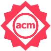
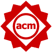
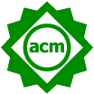
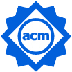
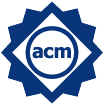

Call For Papers
Authors of accepted research papers are invited to submit an artifact to the ESEC/FSE Artifact Track. Note that any such artifact can also be submitted to the ESEC/FSE demonstration track (and vice versa).
Research papers with “artifacts” receive a “badge” on the front page of their paper in the proceedings. These badges certify that the paper has an associated artifact of the following form:
| Functional | Reusable | Available | Replicated | Reproduced | |
| No Badge |  |  |  |  |  |
| Artifacts documented, consistent, complete, exercisable, and include appropriate evidence of verification and validation. | Functional + very carefully documented and well-structured to the extent that reuse and repurposing is facilitated. In particular, norms and standards of the research community for artifacts of this type are strictly adhered to. | Functional + Placed on a publicly accessible archival repository. A DOI or link to this repository along with a unique identifier for the object is provided. | Available + main results of the paper have been obtained in a subsequent study by a person or team other than the authors, using, in part, artifacts provided by the author. | Available + The main results of the paper have been independently obtained in a subsequent study by a person or team other than the authors, without the use of author-supplied artifacts. |
Papers with such badges contain reusable products that other researchers can use to bootstrap their own research. Such papers earn increased citations and greater prestige in the research community. Artifacts of interest include (but are not limited to) the following. This list is not exhaustive, but if your proposed artifact is not on this list, please email the chairs before submitting.
- Software, i.e., implementations of systems or algorithms potentially useful in other studies. This category also comprises tools/services illustrating new approaches to software engineering that could be used by other researchers in different contexts.
- Data repositories, i.e., data (e.g., logging data, system traces, survey raw data) that can be used for multiple software engineering approaches.
Selection Criteria
The ESEC/FSE artifacts track will be evaluated using the criteria in the last row of the above table.
The goal of this track is to encourage reusable research products.
- Hence, no “functional” badges will be awarded
Note that for “replicated” and “reproduced” badges, authors will need to offer appropriate documentation that their artifacts have reached that stage.
- So it is anticipated that most of our artifacts will be “reusable” and “available”.
Review Process
- Artifacts will be reviewed via a single blinded GitHub-based process (reviewers know authors, but not vice versa). All reviews will be Github issues. To this end, we create (private) Repositories within a dedicated AE track organization.
- Artifacts will be checked for their “badge worthiness” by two reviewers. In case of disagreement, one of the chairs will perform an additional check.
- Reviewers will be assigned an anonymous GitHub ID.
- And authors will interact with the reviewers using their real name (non-anonymously).
- Reviewers will have 14 days to assess the artifacts. In exceptional cases (e.g., trouble to run the artifact), reviewers are allowed to contact authors via email.
- After assessment, reviewers and authors will have one week to interact such that (e.g.) if there is one line missing in a config file, then that bug can be fixed and the artifact declared “reusable”.
- Track chairs will then meet to write a “decisions.md” list written to the https://github.com/esecfse2019-ae that contains a table of submissions and their associated badge (if any).
Submission Procedure for Artifact Evaluation Track ESEC/FSE 2019
To focus on the actual artifact submitted, we ask you to make it reviewer as easy as possible to access your artifacts, try them out, dig into them, and, eventually, evaluate their badge worthiness solely based on what matters.
To this end, we set up a procedure that must be followed to prepare your artifact prior to submission. Please, read carefully. In case of questions or doubts, do not hesitate to contact the Artifact Evaluation co-chairs.
-
Preparatory Action (optional)
You may want to read over the paper „Good Enough Practices in Scientific Computing” by Greg Wilson et al. (see https://arxiv.org/pdf/1609.00037 for available preprint). In particular, you may consider the advices in Section 4 to be useful when preparing your artifact.
Also, Section 7 elaborates on packaging, which you may decide to take into account. Especially if you are rather unexperienced in delivering your artifact so that it can be used elsewhere, these advices should be taken into account.
-
Prepare Artifact & Supporting Materials
Prepare all the supporting materials needed to execute your artifact.
In particular,
- A PDF of your accepted paper (for reviewers only)
- A README main file describing what the artifact does (preferably in markdown format).
- A STATUS file stating what kind of badge(s) you are applying for (one or more of reusable, available, replicated, reproduced) as well as the reasons why you think your artifact deserves that badge (preferably in markdown format).
- a LICENSE file describing the distribution rights (and note that to score “available” or higher, then that license needs to be some form of open source license) (preferably in markdown format).
- an INSTALL file with installation instructions (preferably in markdown format).
In particular, these instructions should include notes on what output to expect that confirms:
- The code is installed and working
- The code is doing something interesting and useful
- Enough associated code and data such that some CS person with a reasonable knowledge of scripting, build tools, etc. could install, build, run your code; i.e., anyone that gets the following joke:
- Putting the Pieces Together
- Place all of the above mentioned materials in a folder. Make sure that the folder is properly structured (cf. Section 4 of the paper, mentioned at the beginning). Name this folder as follows: <author-name>+“_“+<tool/artifact name>+“_“+“ESEC-FSE“+“_“+<title>+“_“+<paper-ID>
- Zip that folder.
- Put the resulting ZIP file online.
- Go to https://www.befragungen.ovgu.de/fse-ae2019/ and fill in the submission form which will ask you to include a link to your zip file.
-
Finally…Done
Finally…Done
We will add your directory and your github account(s), specified in the submission form, to a dedicated github repository for reviewing (and also subsequent discussion).
If, in a few days, your directory has not appeared at https://github.com/esecfse2019-ae , then ping one of the PC co-chairs, that is, either Sandro or Andy.
Important Dates (tentative)
All dates are 23:59:59 AoE (UTC-12h).
- May 27: FSE Research paper notification
- June 10: Artifact Evaluation submission deadline
- June 22: Start of discussion period with reviewers.
- July 1: Chairs will provide notification over the Github repo (including the suggested type of badge)
- July 1: ESEC/FSE camera ready version